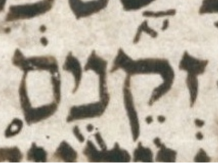

Prev
Next

bcv (link to tanach.us)
lm4:16
MPK
זְקֵנִ֖ים
qere
וּזְקֵנִ֖ים
at issue
וּ
at issue English
added a shuruq dot to the initial vav
folio col line
432A 2 13
The MPK has no letter to carry a shuruq dot for the qere’s vav.